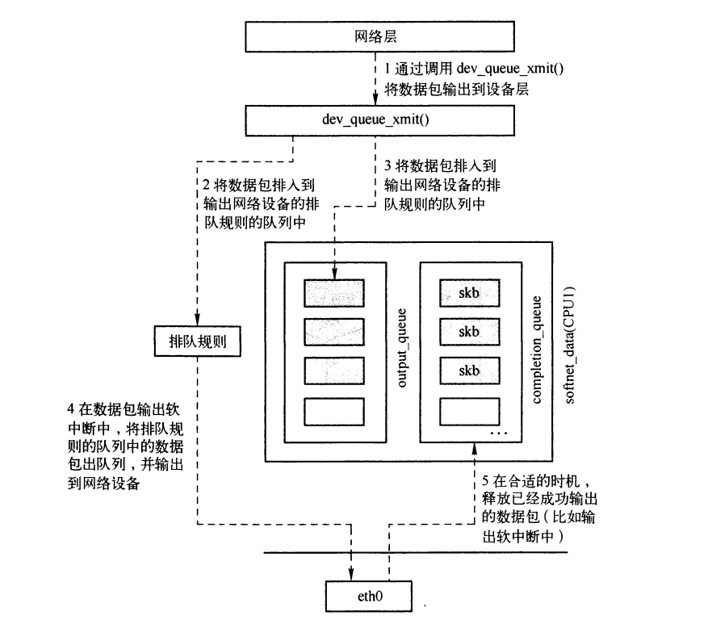
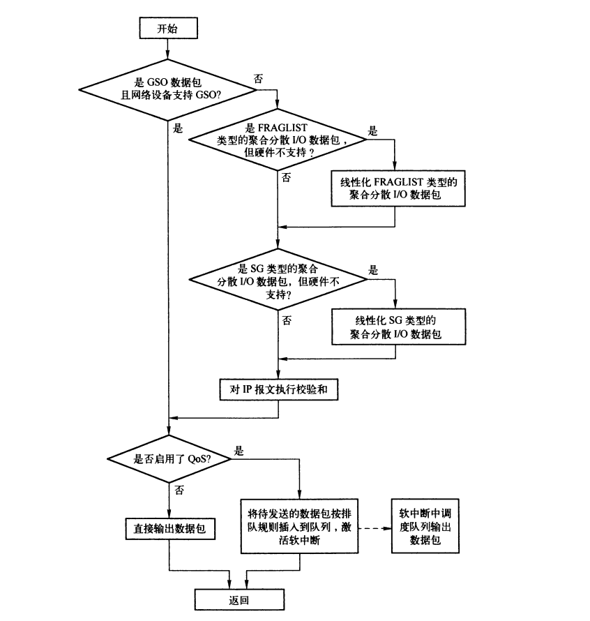
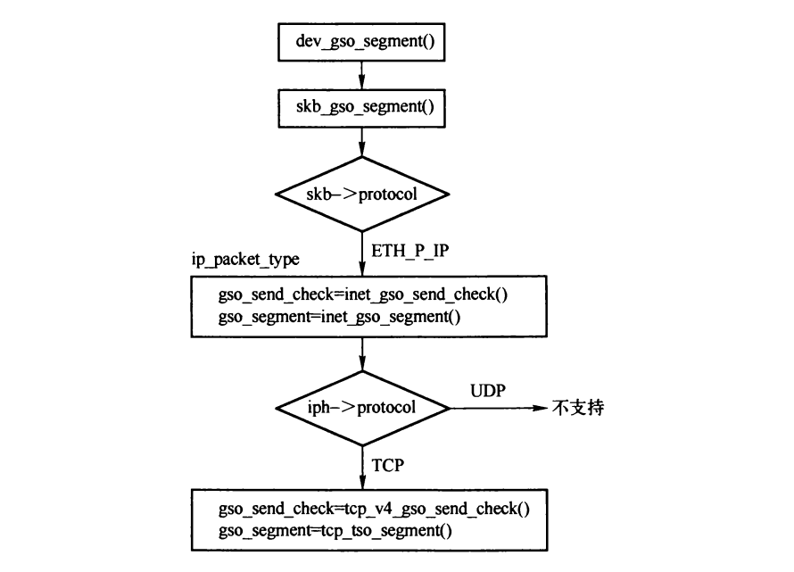

接口层的输出
Table of Contents
输出过程中，会使用CPU softnet_data实例的output_queue和completion_queue队列。

Figure 1: softnet_data与接口层和网络层的关系
1. 输出接口
1.1. dev_queue_xmit()
如果支持流量控制，则将待输出的数据包根据规则加入到输出网络设备队列中排队，并在合适的时机激活网络输出软中断，将报文输出。如果不支持流量控制，则直接将数据包从网络设备输出。
调用dev_queue_xmit()函数输出数据包是，需要启动中断，只有启用中断之后才能激活下半部。

Figure 2: dev_queue_xmit()流程
int dev_queue_xmit(struct sk_buff *skb) { struct net_device *dev = skb->dev; struct Qdisc *q; int rc = -ENOMEM; /* 支持GSO，则跳转到gso标签 */ if (netif_needs_gso(dev, skb)) goto gso; if (skb_shinfo(skb)->frag_list &&//FRAGLIST类型的聚合分散I/O数据包 !(dev->features & NETIF_F_FRAGLIST) && //设备是否支持FRAGLIST类型的聚合分散I/O __skb_linearize(skb)) //对SKB需要线性化 goto out_kfree_skb; if (skb_shinfo(skb)->nr_frags && //SG类型的聚合分散I/O数据包 (!(dev->features & NETIF_F_SG) || illegal_highdma(dev, skb)) && __skb_linearize(skb)) //对SKB线性化 goto out_kfree_skb; if (skb->ip_summed == CHECKSUM_PARTIAL && //硬件执行校验和 (!(dev->features & NETIF_F_GEN_CSUM) && //设备不支持硬件校验和 (!(dev->features & NETIF_F_IP_CSUM) || skb->protocol != htons(ETH_P_IP)))) if (skb_checksum_help(skb)) //计算校验和 goto out_kfree_skb; gso: spin_lock_prefetch(&dev->queue_lock); rcu_read_lock_bh(); q = rcu_dereference(dev->qdisc); //获取排队规则 #ifdef CONFIG_NET_CLS_ACT skb->tc_verd = SET_TC_AT(skb->tc_verd,AT_EGRESS); #endif if (q->enqueue) { //定义了入队操作 /* Grab device queue */ spin_lock(&dev->queue_lock); q = dev->qdisc; if (q->enqueue) { rc = q->enqueue(skb, q); qdisc_run(dev); spin_unlock(&dev->queue_lock); rc = rc == NET_XMIT_BYPASS ? NET_XMIT_SUCCESS : rc; goto out; } spin_unlock(&dev->queue_lock); } if (dev->flags & IFF_UP) { //设备启用状态 int cpu = smp_processor_id(); /* ok because BHs are off */ if (dev->xmit_lock_owner != cpu) { HARD_TX_LOCK(dev, cpu); //HARD_TX_LOCK/HARD_TX_UNLOCK之间只能调用一次dev_queue_xmit if (!netif_queue_stopped(dev)) { rc = 0; if (!dev_hard_start_xmit(skb, dev)) {//输出数据包 HARD_TX_UNLOCK(dev); goto out; } } HARD_TX_UNLOCK(dev); if (net_ratelimit()) printk(KERN_CRIT "Virtual device %s asks to " "queue packet!\n", dev->name); } else { /* Recursion is detected! It is possible, * unfortunately */ if (net_ratelimit()) printk(KERN_CRIT "Dead loop on virtual device " "%s, fix it urgently!\n", dev->name); } } rc = -ENETDOWN; rcu_read_unlock_bh(); out_kfree_skb: kfree_skb(skb); return rc; out: rcu_read_unlock_bh(); return rc; }
1.2. dev_hard_start_xmit()
dev_hard_start_xmit()将待输出的数据包提交给网络设备的输出接口。
int dev_hard_start_xmit(struct sk_buff *skb, struct net_device *dev) { if (likely(!skb->next)) { //单个数据包 if (netdev_nit) //如果应用层通过socket(AF_PACKET,SOCK_RAW,htons(ETH_P_ALL))创建的原始套接口，则向其发送一份数据 dev_queue_xmit_nit(skb, dev); //数据包为GSO数据包，但是设备不支持 if (netif_needs_gso(dev, skb)) { if (unlikely(dev_gso_segment(skb))) //进行软分割 goto out_kfree_skb; if (skb->next) //分割为多个数据包 goto gso; } return dev->hard_start_xmit(skb, dev); //分割后还是一个数据包，直接发送 } gso: do {//输出gso数据包 struct sk_buff *nskb = skb->next; int rc; skb->next = nskb->next; nskb->next = NULL; rc = dev->hard_start_xmit(nskb, dev); if (unlikely(rc)) { nskb->next = skb->next; skb->next = nskb; return rc; } if (unlikely(netif_queue_stopped(dev) && skb->next)) return NETDEV_TX_BUSY; } while (skb->next); skb->destructor = DEV_GSO_CB(skb)->destructor;//恢复SKB原先的析构函数 out_kfree_skb: kfree_skb(skb); return 0; }
1.3. e100的输出接口
e100_xmit_frame() 是e100网络设备的输出接口。
2. 网络输出软中断
2.1. netif_schedule()
有多个接口可以激活数据包输出软中断，最常用的是netif_schedule()。
static inline void netif_schedule(struct net_device *dev) { if (!test_bit(__LINK_STATE_XOFF, &dev->state)) //是否关闭了排队功能 __netif_schedule(dev); } void __netif_schedule(struct net_device *dev) { if (!test_and_set_bit(__LINK_STATE_SCHED, &dev->state)) {//是否处于流量控制的调度中 unsigned long flags; struct softnet_data *sd; local_irq_save(flags); sd = &__get_cpu_var(softnet_data); dev->next_sched = sd->output_queue; sd->output_queue = dev; //将设备挂到softnet_data的output_queue队列。 raise_softirq_irqoff(NET_TX_SOFTIRQ);//激活网络输出软中断 local_irq_restore(flags); } }
2.2. net_tx_action()
net_tx_action()是数据包输出的软中断例程，激活后遍历output_queue队列的设备，调用 qdisc_run() 发送数据包。
static void net_tx_action(struct softirq_action *h) { struct softnet_data *sd = &__get_cpu_var(softnet_data); if (sd->completion_queue) { //存在输出完成的数据包 struct sk_buff *clist; local_irq_disable(); clist = sd->completion_queue; sd->completion_queue = NULL; local_irq_enable(); while (clist) {//遍历释放完成的数据包 struct sk_buff *skb = clist; clist = clist->next; BUG_TRAP(!atomic_read(&skb->users)); __kfree_skb(skb); } } if (sd->output_queue) { //存在待处理的输出网络设备，则遍历发送 struct net_device *head; local_irq_disable(); head = sd->output_queue; sd->output_queue = NULL; local_irq_enable(); while (head) { struct net_device *dev = head; head = head->next_sched; smp_mb__before_clear_bit(); clear_bit(__LINK_STATE_SCHED, &dev->state); if (spin_trylock(&dev->queue_lock)) { qdisc_run(dev); //发送数据包 spin_unlock(&dev->queue_lock); } else { netif_schedule(dev); //再次调度数据包软中断 } } } }
3. 网络设备不支持GSO时的处理

Figure 3: 输出时网络设备不支持GSO时进行GSO分段的调用流程
3.1. dev_gso_cb私有控制块
GSO段经分段后得到的段通过skb->next链接在一起。当释放GSO段的时候需要将这些段同时释放，为此需要指定分段的析构函数–dev_gso_skb_destructor()。原先的析构函数需要保存在SKB的dev_gso_cb结构中。
struct dev_gso_cb { void (*destructor)(struct sk_buff *skb); }; #define DEV_GSO_CB(skb) ((struct dev_gso_cb *)(skb)->cb) static void dev_gso_skb_destructor(struct sk_buff *skb) { struct dev_gso_cb *cb; do { struct sk_buff *nskb = skb->next; skb->next = nskb->next; nskb->next = NULL; kfree_skb(nskb); } while (skb->next); //删除并释放出第一个之外的SKB cb = DEV_GSO_CB(skb); if (cb->destructor)//调用原先的析构函数释放第一个SKB cb->destructor(skb); }
3.2. dev_gso_segment()
dev_gso_segment()通过调用skb_gso_segment()来分割GSO段。
static int dev_gso_segment(struct sk_buff *skb) { struct net_device *dev = skb->dev; struct sk_buff *segs; int features = dev->features & ~(illegal_highdma(dev, skb) ? NETIF_F_SG : 0); segs = skb_gso_segment(skb, features);//进行软分割 if (!segs) return 0; if (unlikely(IS_ERR(segs))) return PTR_ERR(segs); skb->next = segs; DEV_GSO_CB(skb)->destructor = skb->destructor;//保存原先的析构函数 skb->destructor = dev_gso_skb_destructor; return 0; }
3.3. skb_gso_segment()
skb_gso_segment()用于GSO分段，并将其通过skb的next链接，返回NULL则表示没有分段。
struct sk_buff *skb_gso_segment(struct sk_buff *skb, int features) { struct sk_buff *segs = ERR_PTR(-EPROTONOSUPPORT); struct packet_type *ptype; __be16 type = skb->protocol; int err; //frag_list一定为空 BUG_ON(skb_shinfo(skb)->frag_list); //取出以太网帧首部 skb->mac.raw = skb->data; skb->mac_len = skb->nh.raw - skb->data; __skb_pull(skb, skb->mac_len); if (unlikely(skb->ip_summed != CHECKSUM_PARTIAL)) { if (skb_header_cloned(skb) &&//如果skb是克隆的，需要重新分配 (err = pskb_expand_head(skb, 0, 0, GFP_ATOMIC))) return ERR_PTR(err); } rcu_read_lock(); //遍历查找对应的GSO接口 list_for_each_entry_rcu(ptype, &ptype_base[ntohs(type) & 15], list) { if (ptype->type == type && !ptype->dev && ptype->gso_segment) { if (unlikely(skb->ip_summed != CHECKSUM_PARTIAL)) { err = ptype->gso_send_check(skb); segs = ERR_PTR(err); if (err || skb_gso_ok(skb, features)) break; __skb_push(skb, skb->data - skb->nh.raw); } segs = ptype->gso_segment(skb, features);//分段 break; } } rcu_read_unlock(); //重新添加以太网帧首部 __skb_push(skb, skb->data - skb->mac.raw); return segs; }